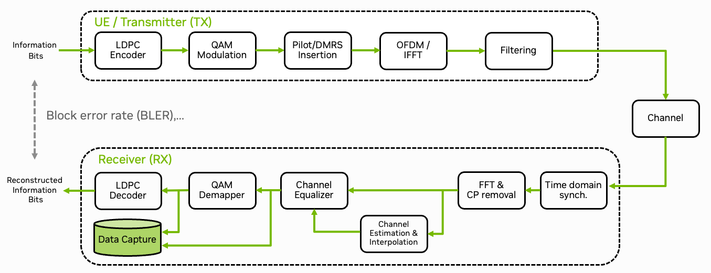

Plugins & Data Acquisition#
{kind=link}

Fig. 19 Schematic overview of the data capture plugin for the 5G NR PHY layer. MIMO aspects omitted for simplicity.#
The Sionna Research Kit uses the OpenAirInterface (OAI) plugin system [OAILib] to integrate custom code. This tutorial shows how to capture real-world 5G signals (IQ samples) using a plugin that replaces the demapper function. The captured dataset can be used for training in the Integration of a Neural Demapper tutorial.
Quick Start: Data Capture Plugin#
Let’s start with how to use the data capture plugin. The next section will then explain the technical background and how to create your own plugin.
Create log files:
mkdir -p plugins/data_acquisition/logs
cd plugins/data_acquisition/logs
touch demapper_in.txt demapper_out.txt
chmod 666 demapper_in.txt demapper_out.txt
The plugin folder is automatically mounted to the gNB container. This allows you to read/write the log files from the host system and can also be used to pass configuration files or models to the plugin (see Integration of a Neural Demapper tutorial).
You can enable the plugin by setting the environment variable in the .env file (e.g., config/b200/.env) or by passing the option to the executable:
GNB_EXTRA_OPTIONS="--loader.demapper.shlibversion _capture"
This loads the demapper_capture.so shared library. The main benefit is that the plugin can be loaded and unloaded dynamically, which allows for a flexible integration of custom code in the OAI stack. For example, you can now also load the Integration of a Neural Demapper plugin as alternative demapper without recompiling the gNB.
Start the gNB.
./scripts/start_system.sh rfsim
The plugin will be loaded and the data will be captured.
You should then see entries in the log files demapper_in.txt and demapper_out.txt.
Data Format#
Both files use a simple text format with a header followed by symbol data:
0.000000001 # Time source resolution
1373853.185968662 # Timestamp
QPSK # Modulation scheme
96 # Number of symbols
177 -179 # Data values (2 columns for QPSK, 4 for 16-QAM, etc.)
-179 176
...
demapper_in.txt: Input symbols as (Real, Imag) pairsdemapper_out.txt: Output LLRs (2 per symbol for QPSK, 4 for 16-QAM, etc.)
See the Integration of a Neural Demapper tutorial for an example of loading this data in Python.
Writing Your Own Plugin#
The following section explains the technical details on how to create your own plugin and integrate it into the OAI stack.
Step 1: Define the Plugin Interface#
Each plugin type needs an interface definition. The demapper interface is defined in plugins/data_acquisition/src/nr_demapper_extern.h:
#include "nr_demapper_defs.h"
typedef struct demapper_interface_s {
demapper_initfunc_t *init;
demapper_initfunc_t *init_thread;
demapper_shutdownfunc_t *shutdown;
demapper_compute_llrfunc_t *compute_llr;
} demapper_interface_t;
// global access point for the plugin interface
extern demapper_interface_t demapper_interface;
int load_demapper_lib( char *version, demapper_interface_t * );
int free_demapper_lib( demapper_interface_t *demapper_interface );
demapper_initfunc_t demapper_init;
demapper_shutdownfunc_t demapper_shutdown;
demapper_compute_llrfunc_t demapper_compute_llr;
The interface contains function pointers for:
init: Called once at startupinit_thread: Called for each worker thread in the thread poolshutdown: Called at cleanupcompute_llr: The main function that replaces the original OAI demapper function
Step 2: Implement the Plugin Functions#
Your plugin must export functions matching the above interface. Here’s the capture plugin’s initialization and shutdown functions from plugins/data_acquisition/src/nr_demapper_capture.c:
int32_t demapper_init( void )
{
// initialize capture mutex
pthread_mutex_init( &capture_lock, NULL );
// open capture files
f_in = fopen( filename_in, "w" );
AssertFatal( f_in != NULL, "Cannot open file %s for writing\n", filename_in );
f_out = fopen( filename_out, "w");
AssertFatal( f_out != NULL, "Cannot open file %s for writing\n", filename_out );
// print clock resolution
struct timespec ts;
clock_getres( TIMESTAMP_CLOCK_SOURCE, &ts );
fprint_time( f_in, &ts );
fprint_time( f_out, &ts );
return 0;
}
int32_t demapper_shutdown( void )
{
fclose( f_in );
fclose( f_out );
pthread_mutex_destroy( &capture_lock );
return 0;
}
The main processing function is implemented in plugins/data_acquisition/src/nr_demapper_capture.c:
int demapper_compute_llr(int32_t *rxdataF_comp,
c16_t *ul_ch_mag,
c16_t *ul_ch_magb,
c16_t *ul_ch_magc,
int16_t *ulsch_llr,
uint32_t nb_re,
uint8_t symbol,
uint8_t mod_order) {
struct timespec ts;
clock_gettime( TIMESTAMP_CLOCK_SOURCE, &ts );
switch(mod_order){
case 2:
nr_qpsk_llr(rxdataF_comp,
ulsch_llr,
nb_re,
symbol);
capture_qpsk(rxdataF_comp, ulsch_llr, nb_re , &ts);
break;
case 4:
nr_16qam_llr(rxdataF_comp,
ul_ch_mag,
ulsch_llr,
nb_re,
symbol);
capture_qam16(rxdataF_comp, ul_ch_mag, ulsch_llr, nb_re, &ts);
break;
#if 0 // disabled
case 6:
nr_64qam_llr(rxdataF_comp,
ul_ch_mag,
ul_ch_magb,
ulsch_llr,
nb_re,
symbol);
break;
case 8:
nr_256qam_llr(rxdataF_comp,
ul_ch_mag,
ul_ch_magb,
ul_ch_magc,
ulsch_llr,
nb_re,
symbol);
break;
#endif
default:
AssertFatal(1==0,"capture_demapper_compute_llr: invalid/unhandled Qm value, symbol = %d, Qm = %d\n",symbol, mod_order);
return 0; // unhandled
}
return 1; // handled
}
For simplicity, we only implement the QPSK and 16-QAM demapper functions, but extensions are straightforward.
Step 3: Create the Plugin Loader#
In order to load the plugin, we need to create a loader function that maps function names to symbols in your shared library. This is done in plugins/data_acquisition/src/nr_demapper_load.c:
static int32_t demapper_no_thread_init() {
return 0;
}
int load_demapper_lib( char *version, demapper_interface_t *interface )
{
char *ptr = (char*)config_get_if();
char libname[64] = "demapper";
if (ptr == NULL) { // config module possibly not loaded
uniqCfg = load_configmodule( 1, demapper_arg, CONFIG_ENABLECMDLINEONLY );
logInit();
}
// function description array for the shlib loader
loader_shlibfunc_t shlib_fdesc[] = { {.fname = "demapper_init" },
{.fname = "demapper_init_thread", .fptr = &demapper_no_thread_init },
{.fname = "demapper_shutdown" },
{.fname = "demapper_compute_llr" }};
int ret;
ret = load_module_version_shlib( libname, version, shlib_fdesc, sizeofArray(shlib_fdesc), NULL );
if (ret && strcmp(libname, "demapper") == 0 && (!version || !version[0] || strcmp(version, "orig") == 0))
return ret; // demapper lib is optional
else
AssertFatal((ret >= 0), "Error loading demapper library");
// assign loaded functions to the interface
demapper_interface_t module_if = { };
module_if.init = (demapper_initfunc_t *)shlib_fdesc[0].fptr;
module_if.init_thread = (demapper_initfunc_t *)shlib_fdesc[1].fptr;
module_if.shutdown = (demapper_shutdownfunc_t *)shlib_fdesc[2].fptr;
module_if.compute_llr = (demapper_compute_llrfunc_t *)shlib_fdesc[3].fptr;
AssertFatal( module_if.init() == 0, "Error starting Demapper library %s %s\n", libname, version );
memcpy(interface, &module_if, sizeof(*interface));
return 0;
}
int free_demapper_lib( demapper_interface_t *demapper_interface )
{
return demapper_interface->shutdown();
}
Step 4: Register the Plugin#
Add your plugin to the central plugin system in plugins/common/src/plugins.c:
// global entry points for the tutorial plugins
// any global structures defined here.
demapper_interface_t demapper_interface = {0};
receiver_interface_t receiver_interface = {0};
chn_emu_interface_t chn_emu_interface = {0};
cir_file_interface_t cir_file_interface = {0};
cir_zmq_interface_t cir_zmq_interface = {0};
void init_plugins(const NR_DL_FRAME_PARMS *fp)
{
// insert your plugin init here.
load_demapper_lib(NULL, &demapper_interface);
load_receiver_lib(NULL, &receiver_interface);
init_channel_emulator_libs(fp);
}
void free_plugins()
{
// insert your plugin release/free here.
free_demapper_lib(&demapper_interface);
free_receiver_lib(&receiver_interface);
free_channel_emulator_libs();
}
void worker_thread_plugin_init()
{
// insert your plugin per thread initialization here.
if (demapper_interface.init_thread)
demapper_interface.init_thread();
if (receiver_interface.init_thread)
receiver_interface.init_thread();
if (is_channel_emulation_enabled())
init_channel_emulator_worker_thread();
}
Note that the GPU-Accelerated LDPC Decoding tutorial is not registered here as it is a separate OAI plugin that uses the existing OAI loader independently of the Sionna Research Kit.
Step 5: Hook into OAI Code#
Finally, the OAI code must call your plugin instead of the original function. We patch the function nr_ulsch_llr_computation.c in the OpenAirInterface codebase to add this hook:
If no plugin is loaded, the original implementation is used. This is the case when the --loader.demapper.shlibversion parameter is not set or when the plugin is not loaded. Note that we have therefore renamed the original function to nr_ulsch_compute_llr_default.
Step 6: Add CMake Build Rules#
Each plugin needs a CMakeLists.txt that registers the loader with the build system, builds the plugin as a shared library, and adds it as a dependency of the gNB target. The following is an example for the data capture plugin:
# Register loader source with parent build
set(PLUGINS_SRC ${PLUGINS_SRC} ${CMAKE_CURRENT_SOURCE_DIR}/src/nr_demapper_load.c PARENT_SCOPE)
# Build plugin as shared library
add_library(demapper_capture MODULE
${OPENAIR1_DIR}/PHY/NR_TRANSPORT/nr_ulsch_llr_computation.c
src/nr_demapper_capture.c
)
target_link_libraries(demapper_capture PRIVATE pthread)
# Build with gNB
add_dependencies(nr-softmodem demapper_capture)
Then add your subdirectory to plugins/CMakeLists.txt:
add_subdirectory(data_acquisition)
Summary#
After re-building the gNB, you can now use the plugin by setting the --loader.demapper.shlibversion parameter to _capture.
Though plugins add implementation overhead, the advantage is that they can be loaded dynamically, allowing you to rebuild the plugin without recompiling the entire gNB. This also makes it easier to compare different implementations.
The Integration of a Neural Demapper, the 5G NR PUSCH Neural Receiver, and the GPU-Accelerated LDPC Decoding tutorials are implemented as plugins and can be used as a drop-in replacement for the original OAI functions.